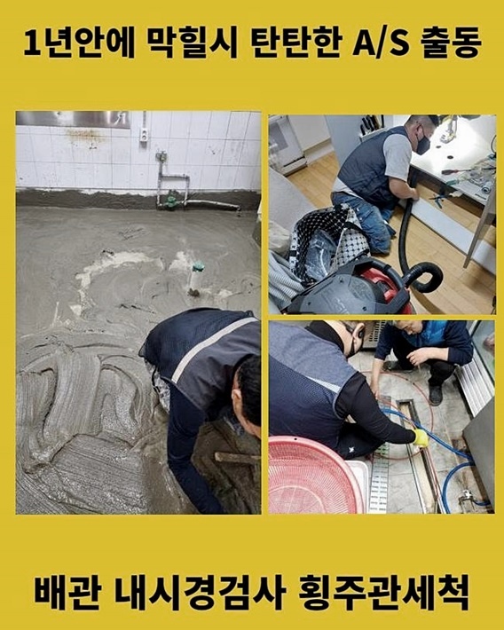
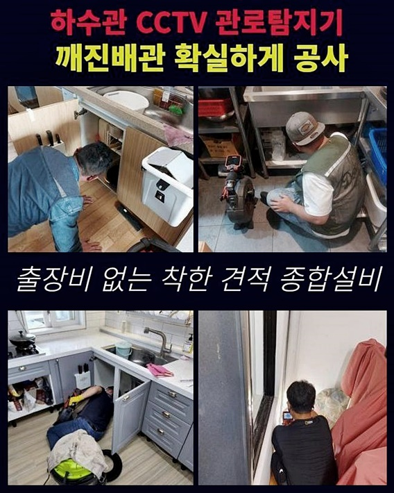
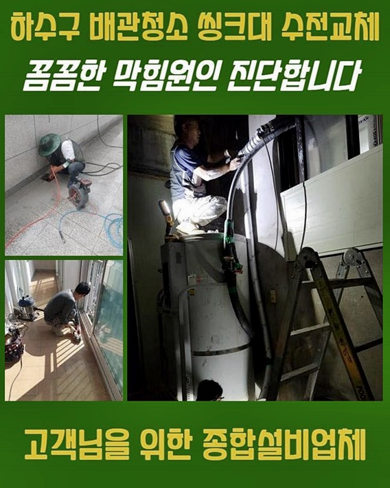
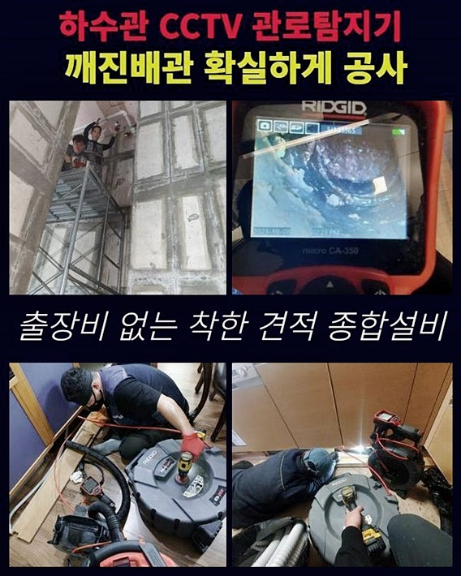
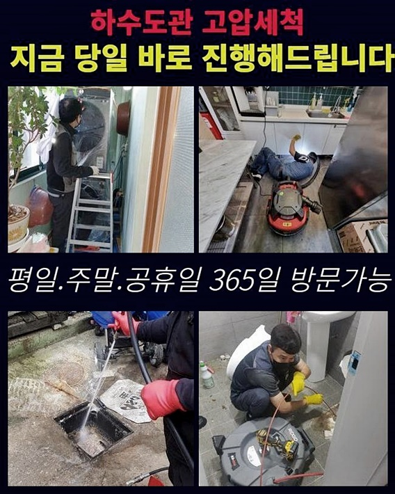

🏠 성남 상대원동싱크대배수구막힘 갈현동 하수관고압세척 설비업체
성남 원동 싱크대막힘 전문 시공 후기

📋 작업 개요
- 위치: 성남 원동, 원동, 성남
- 서비스 유형: 싱크대막힘, 하수구막힘, 배관막힘, 역류해결, 배관청소, 고압세척, 악취차단
- 작업 일시: 2024. 7. 9. 17:32
- 업체명: 하수구수사대 (010-5615-2118)
🔍 문제 상황
성남 상대원동싱크대배수구막힘 갈현동 하수관고압세척 설비업체
하수관에 축적된 기름들로 인해 생긴 막힘현상과 욕실배관에서 폐수가 올라오는 상황들을 대응하는 절차들을 이미지와 설명으로 알려드리겠습니다
배수배관 역류상황과 하수도관막힘은 일상에 중대한 장애물이 되는 주된 이슈들 중 하나로 꼽힙니다
부엌 싱크와 세면시설부터 욕실까지 물이 지나가는 일체의 위치에서 이러한 상황이 생길 확률이 존재합니다
많은분들이 웹검색을 통하거나 주변사람들의 의견을 듣고 값싼 기구를 사용해 오물 청소나 화학물질을 투입해 여러 대책을 시도하게됩니다
다만 이같은 방식들이 배수구 기능에 도리어 피해를 발생시킬 수 있는 점을 염두에 두어야합니다
실질적으로 전문 장비들을 취급하는 수리업체들도 심한 하수배관 정리작업으로 배수구조에 해를 끼치는 경우들이 존재합니다
얼마전 어느 손님께서 이런 작업들을 스스로 실행해본 후 최종적으로는 저희에게 지원을 신청하시게 되었습니다
이러한 예를 통해 배관막힘 해소를 위해 전문적인 능력과 혁신적인 대응책이 요구된다는것을 깨닫게됩니다
배수관막힘 현장내에서 우리 전문팀이 화장실 배관의 막힘현상을 해소하기 위해 모였어요
폐수 하수관으로 배출할 때 역류하여 올라오는 불순물이 관찰되었습니다

🔎 원인 분석
💡 전문가 진단: 정밀 진단 장비를 사용하여 슬러지의 고착 여부를 판명하고 타격/세척 작업을 실시했습니다.
이 문제는 응고된 기름들과 여러 이물질들이 배관들의 접합부위나 불량한 경사지점에 축적되어 발생하게 되었어요
그렇지만 걱정하지 않아도 됩니다 우리들은 이러한 종류의 시설물 고장을 해결할 수 있는 첨단 장비들과 전문적인 지식들을 가지고 있으므로 고객님의 고민을 풀어낼 준비를 갖추고 있습니다
배관안의 지방질과 잔여물을 없애고 나면 이후 배수장애는 발생하지 않으므로 배수장애를 성공적으로 해결가능합니다
이와 비슷한 배수관 막힘상황을 없앨 수 있는 대응 방안들을 설명해드릴게요
가장먼저 시도할 방법들은 스프링 기기를 사용하는 거예요
막혀있던 배관에 스프링 청소기를 넣어주고 가동해서 하수도 안의 기름때 덩어리를 부숴서 물을 여러번 부어 바깥으로 제거합니다
하수구 주위에 남아있는 소량의 불순물을 정리해 주려면 흡입기호스를 하수배관에 넣은 후 여러번 반복하여 청소해주었습니다
또 다른 방법들로는 플렉스 샤프트 기기를 사용하는 방식입니다
플렉스 샤프트장비는 탄력성이 높아서 굽어진 배수구라도 문제없이 도달하여 기름 찌꺼기들을 갈아내고 석션장비로 수 회 흡입하여 하수관 안쪽의 이물질을 완벽하게 없앱니다
수돗물을 부어 잔재하는 찌꺼기들을 없앤뒤 배수관을 깔끔하게 관리합니다
하수도 깊숙이 남겨진 모래나 돌멩이등의 이물질들은 강한수압의 세정 절차로 말끔히 제거 가능합니다
하수관에 들어간 귀중한 물건이 있다거나 오수관이 노후화되어 변형되었거나 파손된 때에는 배수관을 수선하여 원래 모습으로 복구해드립니다

🔧 작업 과정
배수문제들을 처리하기 위하여 첫 과정으로 문제 발생 위치를 검사한 다음 매우 강한 석션이 가능한 장비를 활용해 파이프속의 기름뭉치 그리고 슬러지들을 흡착하여 처리했습니다
석션도구는 비교적 작은 막힌 문제 처리로 효과적이지만 강력한 막힘 혹은 배수관 깊은 부분의 오염물들을 해결할때는 제약이 있어서 이와같은 경우에는 추가적인 기구를 투입합니다
한 건물 현장내에서는 막힘장애를 한동안 내버려두어 악화된 수준에 이르렀고 석션 방식으로는 수리가 불가능한 상태로 진단했습니다
그렇기 때문에 하수관 내부를 재차 조사하고 나서 플렉스 샤프트기기로 수리하기로 결정하였습니다
하수도관막힘은 건축물의 배수장치에 심각한 영향을 초래하는 현상으로 막힘 때문에 물이 되돌아 나오거나 불쾌한 냄새가 나서 위생적으로 문제가 됩니다
문제장소에서는 드릴 형태를 가진 플렉스 샤프트기기를 이용하여 빠른 회전 속도의 장치가 하수관 내부의 찌꺼기들을 분쇄하고 제거 과정들을 실시하였습니다
빌딩 하수파이프 막힘 처리는 쉬운 과정이 아니며 장애요인을 상세히 검토하여 근원적인 배수관 막힘장애들을 수리해야해요
그렇게 하지 않을 경우 배수파이프가 다시금 배수장애나 역한냄새가 악화 될 수 있습니다
저희 업체는 여러종류의 최신형 기기를 보유하고 있는 수리 전문 팀으로 전문 기술진이 있기 때문에 고장을 완벽하게 처리하게 됩니다
하수도관막힘과 배수파이프 역행상황은 일상에서 간혹 맞닥뜨리지만 배관라인 막힘을 미연에 방지하려면 원인들을 파악하고 주의해서 이용하는 것이 필수적입니다
하수관과 더불어 물이 지나가는 파이프 전체를 꾸준한 세척을 진행해 장애가 생기지 않도록 점검하는 것이 바람직해요
문제 해결을 하려고 흡입기구와 샤프트기구를 사용하여 배수관 내부의 오염물을 세척한다음 배수관전용 내시경기계를 사용해 배관내부를 카메라로 체크하여 잔류 찌꺼기는 없는지 확인했습니다
건물에서 나타나는 배수관 막힘상황을 자신이 없애려는 힘쓰는 것은 충분히 공감합니다
그렇지만 진행하다가 갑작스럽게 추가적인 문제현상이 생길 수 있는 위험들을 감안하면 전문인의 지원을 신청하는 방안이 안정성이 높은 해결잭이 됩니다
경미한 현상이라면 약제나 도구들을 사용해 혼자 해결할 수도 있죠
이런 경우에 주의해야 하는 점은 막힘정도와 이유들을 제대로 분석하고 구매한 약제나 도구들을 적절히 쓰는 것입니다
올바른 사용을 못하면 하수도나 배수관로에 피해들을 초래합니다
그렇지만 이런방법들이 실패하더라도 염려할 필요는 없어요
전문기술자는 이러한 어려움을 빠르며 정확하게 해결 가능하며 이 과정을 통해 시간과 수리비를 아낄수 있으며 하수구 막힘문제나 균열등으로 유발될 가능성이 있는 중대한 사항을 사전에 차단할 수 있어요


✅ 작업 완료
혼자 시도중에 하수관이 파손될 위험요소가 있어 내시경장비로 진단을 실행하는게 바람직하다고 할 수 있습니다
역한 냄새들을 방지하기 위해서 고성능의 배수구커버를 설치해 주었습니다
마지막으로 화장실로 가서 우리 전문인이 물을 틀어 배수시스템들에 문제점은 없는지 확인한 후 물이 순조롭게 내려가는 것을 확인했어요
세면대 배수관 냄새처리 요금은 작업 환경이나 배관의 상태 그리고 악취의 심각도를 진단 후 변동되기 때문에 저희전문가는 현장을 조사한 후 비용을 정확하게 알려드립니다
저희 전문가들은 작업현장 방문시 추가로 출장요금을 요구하지 않으므로 의뢰인은 경비에 대하여 염려하시지 않아도 됩니다



⚠️ 주방 싱크대 배관 막힘 예방 수칙
- ✅ 기름기가 묻은 식기나 프라이팬은 설거지 전 키친타올로 반드시 기름때를 닦아내세요.
- ✅ 주기적으로 싱크대 개수대에 뜨거운 물을 가득 받아 한 번에 내려 배관 내부 기름을 씻어내세요.
- ✅ 배수구 거름망을 미세한 필터로 사용하시고 음식물 찌꺼기가 틈으로 새어 들지 않게 관리하세요.
- ✅ 베이킹소다와 식초를 뜨거운 물과 함께 일주일에 한 번씩 부어주면 배관 살균과 막힘 예방에 좋습니다.
💡 핵심 정리
- 확실한 장비 작업(내시경 점검 및 샤프트 스케일링)으로 원인을 뿌리 뽑습니다.
- 작업 후 1년 이내에 동일한 부위 재발 시 100% 무상 A/S 서비스를 보장합니다.
- 서울 · 경기 · 인천 전 지역에 24시간 언제든 긴급 출동할 수 있도록 항시 대기 중입니다.
❓ 자주 묻는 질문 (FAQ)
🚨 성남 원동 싱크대막힘 문제로 고민이신가요?
정확한 원인 진단과 확실한 시공으로 재발 없는 해결을 약속드립니다.
24시간 긴급 출동 | 서울 · 경기 · 인천 전지역 | 1년 내 재발 시 무상 A/S